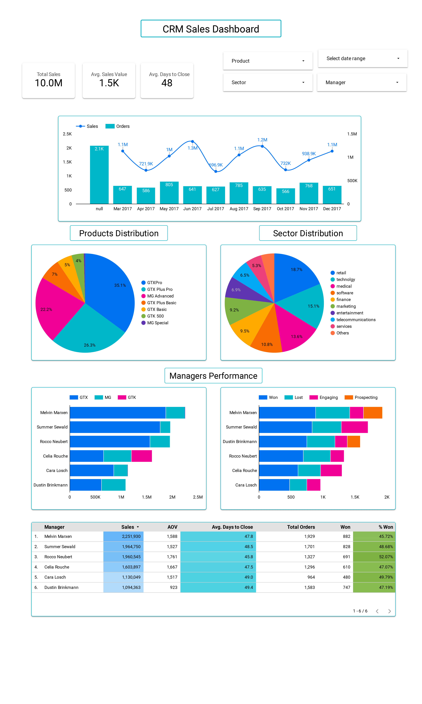

This Data Studio (formerly Looker Studio) dashboard was the live-dashboard project in the Data Analytics Bootcamp at Human Development Network Bangladesh (HDNB), used to teach students how to build a live dashboard from CRM sales data. It shows 10.0M in total sales, an average sales value of 1.5K and 48 average days to close. It splits the results by month, product, sector and sales manager, and compares the six managers on sales, win rate and time to close.

From May to August 2024 I taught SQL in the Data Analytics Bootcamp run by HDNB, from database basics through window functions and query tuning, ending with how to create and manage live dashboards. This dashboard was the course project for that last part: students used it to learn how CRM opportunity records turn into scorecards, trends, mix charts and a manager comparison that update as the data changes.
The data is a sample CRM dataset used for teaching, so the figures below show what the dashboard surfaces, not a real company's results.
Three scorecards (total sales, average sales value, average days to close) sit above a monthly chart of sales against orders. Two pie charts show the product and sector mix. A manager section has two stacked bar charts, one by product family (GTX, MG, GTK) and one by deal stage, and a table with sales, average order value (AOV), average days to close, total orders, orders won and win rate for each manager.
| Manager | Sales | AOV | Avg. days to close | Orders | Won | Win rate |
|---|---|---|---|---|---|---|
| Melvin Marxen | 2,251,930 | 1,588 | 47.8 | 1,929 | 882 | 45.72% |
| Summer Sewald | 1,964,750 | 1,527 | 48.5 | 1,701 | 828 | 48.68% |
| Rocco Neubert | 1,960,545 | 1,761 | 45.8 | 1,327 | 691 | 52.07% |
| Celia Rouche | 1,603,897 | 1,667 | 47.5 | 1,296 | 610 | 47.07% |
| Cara Losch | 1,130,049 | 1,517 | 49.0 | 964 | 480 | 49.79% |
| Dustin Brinkmann | 1,094,363 | 923 | 49.4 | 1,583 | 747 | 47.19% |
Melvin Marxen has the highest sales and the lowest win rate of the six. Rocco Neubert has the highest win rate (52.07%), the highest AOV (1,761) and the fastest average close (45.8 days). Dustin Brinkmann has the lowest AOV (923) on 1,583 orders. The manager sales add up to 10,005,534, matching the 10.0M scorecard.
Rocco Neubert, at 52.07% (691 of 1,327 orders), followed by Cara Losch at 49.79%. The highest total sales belong to Melvin Marxen at 2,251,930, whose win rate of 45.72% is the lowest of the six.
48 days overall. Per manager it ranges from 45.8 days (Rocco Neubert) to 49.4 days (Dustin Brinkmann).
No. It is a sample CRM dataset used to teach live dashboard building in a data analytics bootcamp. The numbers show what the dashboard can surface, not a company's results.